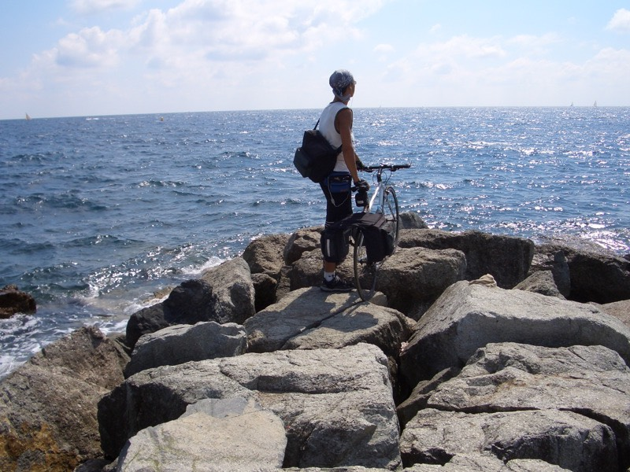

早上醒來發現外頭真的有市集，但身上剩下不到五歐元，買不起什麼東西，市集也沒有刷卡的餘地。
趁肚子還沒餓，趕緊出發吧∼今天希望能騎到尼斯，不然起碼也要騎到坎城。
昨天走了一天的D559，今天功成身退，換N98登場（總算給走了），依舊是整路都沿海的道路。
星期天是個好天氣，海邊的人潮明顯比昨天激增數倍。
越往東邊的海岸騎，女生開放的程度越高，別說是上空辣妹了，連天體營都有。
看了一整天的泳裝辣妹，真的已經痲痹了，現在不論是穿泳裝還是沒穿泳裝的女生對我都已經起不了作用 = ="
十一點出發，十二點到一個叫MAXIME的海邊
海水很藍而且很清澈。
什麼都沒吃，肚子餓得受不了，再怎麼窮，買幾塊麵包還不成問題吧？
看到露天的麵包店，正打算挑幾個好吃的時，發現他們的巧克力麵包是活的，巧克力居然會動，而且還會飛∼
揉揉眼睛仔細一看。不是蒼蠅，那多沒衛生，全部都是蜜蜂之類的東西。
打消了吃麵包的念頭，到時候分不清楚是蜜蜂還是蜂蜜口味。
許許多多的明信片，1歐元一張，寄回台灣的話，郵票錢要0.9歐元。
離開M海灘時，請在沙灘看海的阿伯幫忙拍一張做到不行的照片。

十二點四十五，真的快要餓死了 ~"~
雜貨店出現，東繞繞西繞繞，品客洋芋片一罐要台幣140元，有錢的時候覺得吃什麼都便宜，窮的時候則什麼都買不起。
最後挑了三顆白肉水蜜桃，1.59歐元，這就是早餐了，肚皮撐著點。
不用怎麼花頭腦研究騎車的路線，反正就沿著海岸走，既有單車專用道，又可以欣賞景色，只要有本事騎的夠遠，
不論是要到坎城還是尼斯甚至摩洛哥都沒有問題∼
下午兩點，水蜜桃只維持了一小時，肚子還是餓得受不了，買一條法國麵包啃，0.7歐元，這次應該能撐久一點了吧？
唔....又要爬山了，來吧！反正已經爬了一整路，沒差這一座。
騎到這裡，TGV又開始活躍了，火車走的路線也挺講究的，好想搭火車跑到尼斯，就不用騎的這麼辛苦。
別抱怨，一邊爬山一邊欣賞海景吧。蔚藍海岸真的很藍∼
路邊的柵欄是用跟山一樣的石頭做的，咖啡色。
不過是爬個山而已麻∼我看你能爬多高
這種岩石山脈之間偶爾會夾雜著一些比較隱密的海灘，感覺要搭小船才有辦法進來，就是天體營的所在地了。

爬稍微高一點點，遠眺海對面的城市，那就是坎城了，目測距離有多遠呢？
有些靠海的房子蓋的相當有特色，相當漂亮呢。
一路上看了數不盡的上空美女，眼睛吃了各式口味的冰淇淋，看來感冒要好是相當的困難。
拿著相機對著別人猛拍又很奇怪，所以看過就算囉∼
看那小孩走路的可愛模樣！哎∼反正我說什麼你也沒在看.......

下午四點，坎城，到！

只知道這邊有個影展，李安還常來領獎，其他就沒什麼印象。
這邊是坎城的海邊，由左而右依序是，塞到暴的馬路、停車場、行人步道兼單車道、沙灘、蔚藍海岸。
除了旅館是四星級的，連坎城的旅遊諮詢中心都是四顆星（招牌上畫的），領到一張坎城地圖。
想找坎城影展的場地，好像是這邊又好像不是，反正也是到門口拍張照而已，有沒有到都一樣。
門口有一群帥哥在跳街舞，服務女性讀者的時候到了。
播映機跟底片，的確是影展的城市沒錯。
到坎城的時候發現，遊客雖然激增，但旅館的數量也越來越多。
畢竟這邊是城市，而不是像卡西斯那樣單純的海邊觀光地，所以靠近市區的地方還是有便宜的地方能住的。
有點想偷懶就這麼在坎城住下，誰知道到了尼斯還有沒有這麼多旅館可以挑呢？
離開坎城大約五點，這一小時除了找網路之外，就是找吃的。便宜一點的店不能刷卡。
又不想花一∼兩個小時上餐館吃飯，肚子餓的咕嚕咕嚕叫，兩眼昏花。
神父，我要告解，因為我犯了罪，我吃了禁忌的食物，除了眼睛吃很多的冰淇淋之外。
我還吃了不該碰的食物，希望神能赦免我，因為只有這裡能讓我刷卡，而且我快餓死了。
兩個Big Mac+麥克雞塊+大薯+大可，在台灣吃不知道多少錢？在法國，這麼一盤，新台幣500元。
好久沒有吃麥當勞了，在台灣吃跟在法國吃，味道偏差值在0.2%以下，相當專業的國際企業。
滿意的吃完之後，離開坎城往尼斯前進，繼續走N98，繼續沿著海岸走。
大概一小時半左右，七點，NISSA到了，蔚藍海岸也有方言嗎？路標有兩種版本。
騎在尼斯的路上，真是一大享受，不用跟汽車爭道。路上除了行人之外，也很多溜直排輪跟慢跑的人。
這些小孩很厲害唷∼在路上擺著一整牌的小石頭，然後溜S形前進，心中暗自鼓掌叫好。
除了運動的人之外，連馬車也出現了？大概是非法闖上來的吧，雖然很漂亮，可是被路人瞪白眼瞧。
到尼斯後一路沿海騎了應該有10公里，回頭往後一看，剛好是半圓形的海灘。
再往前走個15公里就可以到摩納哥，有點想去也有點懶得去，都已經快八點了，也差不多該找旅館了吧？
刻在石頭裡面的不知名物
摩納哥在山的那一頭。
找旅館的時候發現，好多的銀行、郵局以及私人商家，都掛上『CHANGE』的牌子。
旅支總算不是放在背包裡的廢紙，明天要多跑幾個地方把全部的旅支都換成現金。
這個人很厲害，一口氣可以丟十幾顆球
手的速度實在太快了，照片根本就拍不起來。
幾乎每間旅館的價目表都分三種時段，淡季、旺季、摩納哥賽車舉辦期間。
價差大概是，1比1.5比2，現在處於1.5倍房價的期間，準備好白花花的銀子再來吧。
很漂亮的建築物，教堂一類的？
找著找著，發現星星數都偏多，根本不用去問價錢。
儘可能的往髒亂的地方移動，尋找破舊的旅館，出現一個迷你招牌掛在公寓大樓的門邊邊。
一顆星還塗掉一半，大廈的鐵門是鎖住的，想進去的話....得按門鈴 @@"
真是奇特的旅館呀 XD 不曉得價位怎麼樣呢？
按了兩聲，才有人出來應門，一問之下有房間，稍微殺價之後，以35歐元成交。
放下包包，出去散步走走，晚餐時間，到處都是人，法國賺這些觀光客的錢真是賺翻了。
吃飯的時候，還有音樂可以聽，很多人在路邊伴奏，可以賞小錢給他們，或是買一片CD。

小龜送的頭巾，已經戴到破洞了，自己帶來的帽子又不知道不見在什麼地方。
其實要不是好心的旅館人員提醒，我早就連相機、手套都弄不見了，出發時連手套沒戴在手上都沒發現，哎.......
邊逛街，看到有賣帽子的店就進去晃晃，挑了一頂蠻喜歡的帽子，13歐元。
晚餐已經在下午五點的時候吃麥當勞吃掉了，所以看著路人吃大餐，也只能嚥口水。
花了五天騎完蔚藍海岸，明天就要往北，準備進入山區，阿爾卑斯山在等著呢∼